SPOILERS WARNING
AHEAD!!!
HELLO! Welcome to my page where i show off all (most) of the pictures i took AHEAD!!!
when making Ushank in Trash Attack!!! I think some of you lads and lassers
might find this, intriging. All pictures taken by me unless stated otherwise.

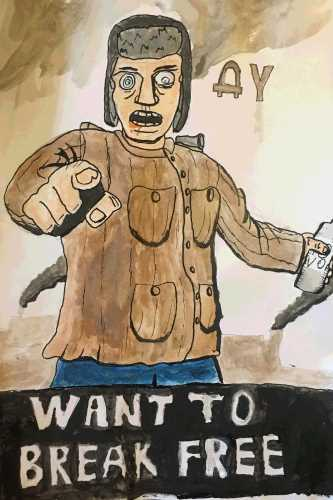
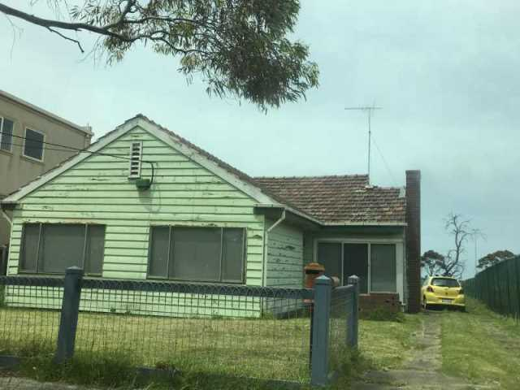
And this is the insporation for ushanks house(well, except the color...)
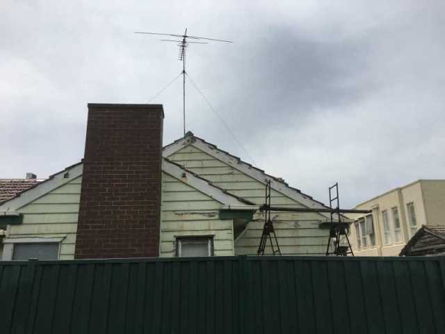
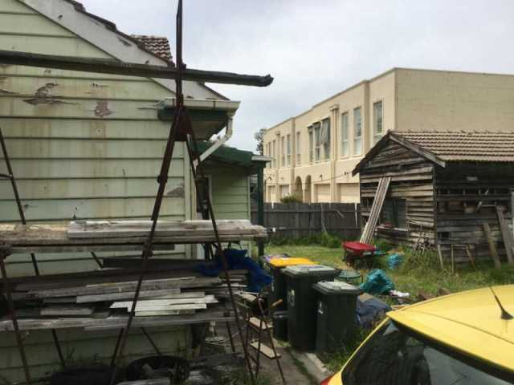
You can tell I took alot from this house!
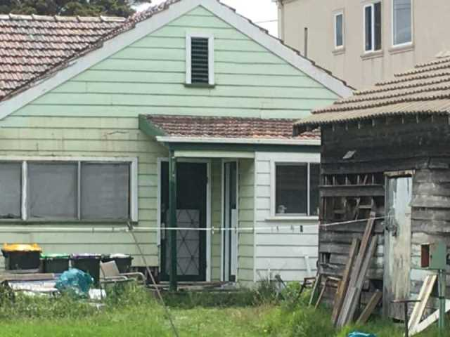
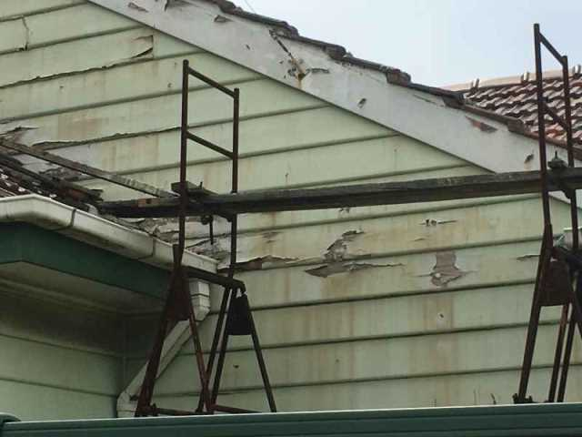
Even did the scafolding!
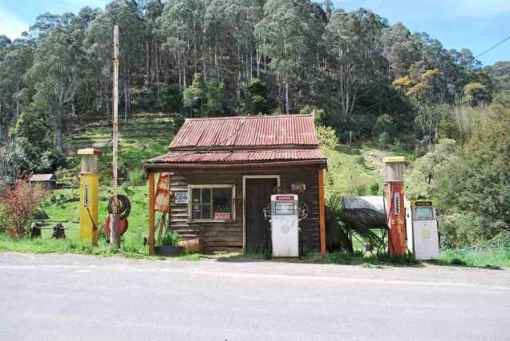
I found this when searching for 'Victoria Gas Station'
This images isn't mine, it is from https://commons.wikimedia.org/wiki/File:Woods_Point_Petrol_Station_001.JPG


umm..
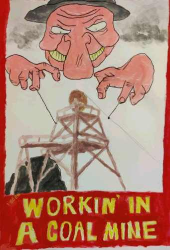
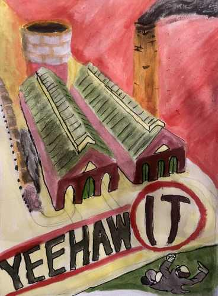
alright this level is mostly based off an area in Ballarat...
it's called Sovereign Hill! Go to it when you feel!
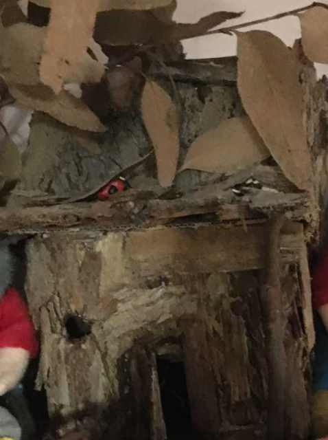
This is a hut i made in highschool, based off a REAL hut in Sovereign Hill!
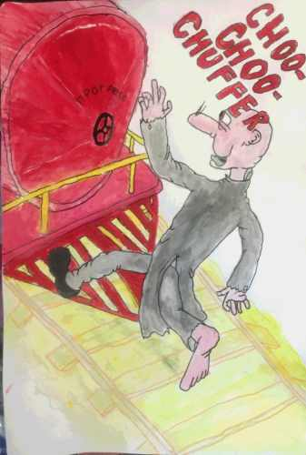
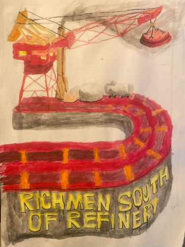
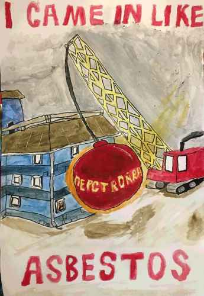
this level is clearly a parody of the Great Ocean Road, but is fictionalized
to be bunkerized and built upon, with abestos (yuck!).
to be bunkerized and built upon, with abestos (yuck!).
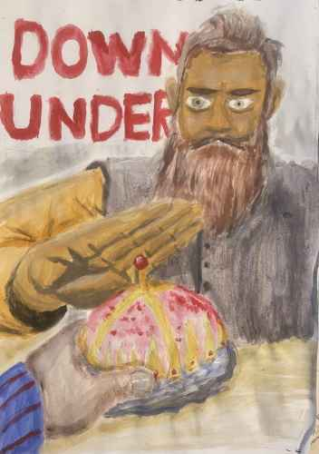